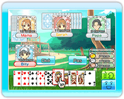

Het doel van elk spel is om alle kaarten in je hand uit te spelen.
3 is de zwakste kaart, gevolgd door 4, 5, 6, 7, 8, 9, 10, J, Q, K, A en 2, waarbij 2 de hoogste kaart is. Als je alleen een Joker speelt, dan is dat je hoogste kaart. (Schoppen 3 kan echter de Joker verslaan.)
- De speler die het spel mag beginnen is de speler met Ruiten 3, die persoon wordt de dealer. Aan het begin van het 2de spel zal de speler die in het vorige spel als vierde is geëindigd de dealer worden. De dealer kan met elke willekeurige kaart beginnen.
- De persoon die als volgende aan de beurt is, zal een kaart op tafel moeten leggen die sterker is dan de vorige kaart die gespeeld werd.
- Als je geen kaart kunt spelen of geen kaart wilt spelen, dan kun je passen.
- Als iedereen past, dan begint er een nieuwe ronde die begint bij de speler die in de vorige ronde als laatste een kaart heeft neergelegd.
- De dealer kan zoveel van dezelfde kaarten neerleggen als hij wil.
- Je kunt drie of meer opeenvolgende kaarten neerleggen als ze van dezelfde kleur zijn (bv: Harten 4, 5 en 6).
- Als de dealer meerdere kaarten op tafel legt, dan moet de speler erna hetzelfde aantal neerleggen maar wel van een hogere waarde.
- Herhaal stap 2 t/m 7, degene die als eerste zijn kaarten kwijt is, heeft de eerste positie behaald in die ronde.
- Als de tweede ronde begint en de kaarten zijn gedeeld, dan mogen spelers op plek 1 en 4 elk twee kaarten ruilen en de spelers op plek 2 en 3 elk 1 kaart. De 1ste en 2de plek geven kaarten die ze niet nodig hebben. De 3de en 4de plek moeten hun sterkste kaarten afstaan.
Als iedereen klaar is met het ruilen van kaarten, dan begint de 2de ronde.
De eerste speler die 6 punten heeft verdiend, wint het spel. De eerste plaats levert 2 punten op, de 2de plaats 1 punt en de 3de en 4de plaats 0 punten.
●Revolutie
Als je meer dan 4 kaarten neerlegt, dan heb je een “Revolutie”. Na een Revolutie worden de waardes omgedraaid (de sterkste kaart 2 wordt de zwakste en de zwakste kaart 3 wordt de sterkste).
●Kapitale Val
Als de speler op plek 1 uit het vorige spel niet zijn positie weet te behouden in het 2de spel, dan valt hij in het volgende spel automatisch terug naar plek 4.
●Achten
Als een 8 wordt gespeeld, alleen of als onderdeel van een combinatie, dan begin je een nieuwe ronde en de speler die de 8 had neergelegd, wordt de dealer.
●Joker
Je kunt een Joker gebruiken als wildcard (deze kan de waarde aannemen van elke andere kaart).
●Schoppen 3
Je kunt een Joker verslaan met de Schoppen 3. Als dit gebeurt, dan is de ronde voorbij en de speler met Schoppen 3 kan een nieuwe ronde beginnen.
※Je kunt “Schoppen 3” niet gebruiken tijdens een Revolutie.
●Binden
Als twee spelers op rij kaarten spelen van dezelfde kleur, dan mag de volgende speler alleen een kaart spelen van dezelfde kleur gedurende de ronde. Dit wordt “Binden” genoemd.
※“Binden”-regels zijn niet toegestaan tijdens een Nintendo WFC spel.
●Overtredingsverlies
Als je wint met een 2, 8 of een Joker, dan loop je een “Overtredingsverlies” op. Zelfs als je een paar of meer hebt, als een van de kaarten een 2, 8 of Joker is, dan telt dit als een “Overtredingsverlies”.
※Tijdens een “Revolutie”, wordt het spelen van een 3 gezien als een “Overtredingsverlies”.